Wednesday: the Original, AL1 and AL2, each signed by different people
Two small additions, for everyone who reads View-only Sched:
Both made in the app the way a scheduler would, on your branch’s demo week. “Proposed” pictures are the same screen with the change laid on top; nothing in the app was changed.
Two small additions, for everyone who reads View-only Sched:
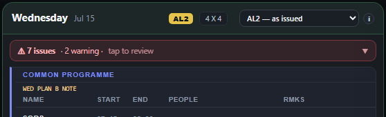
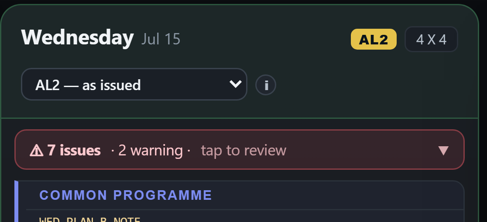
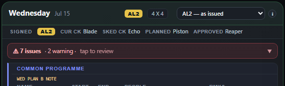
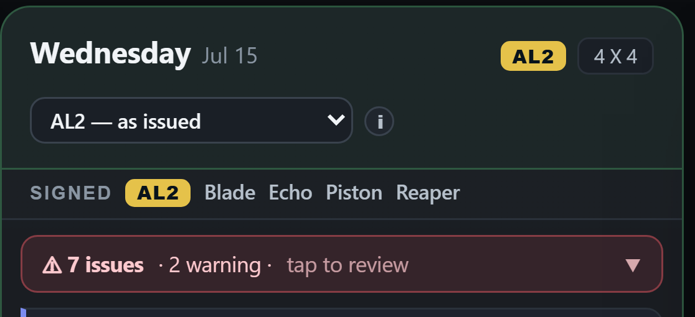
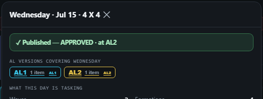
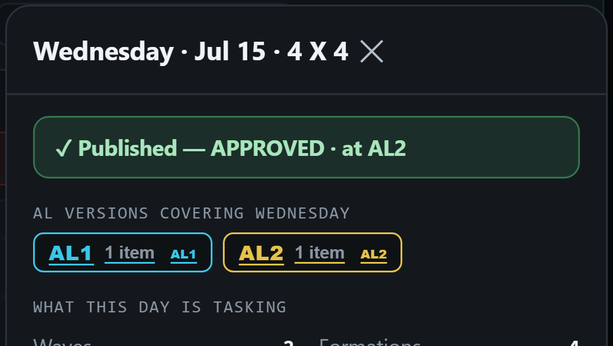
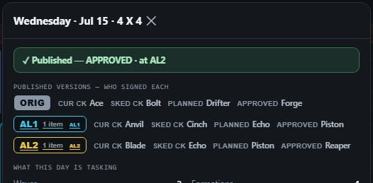
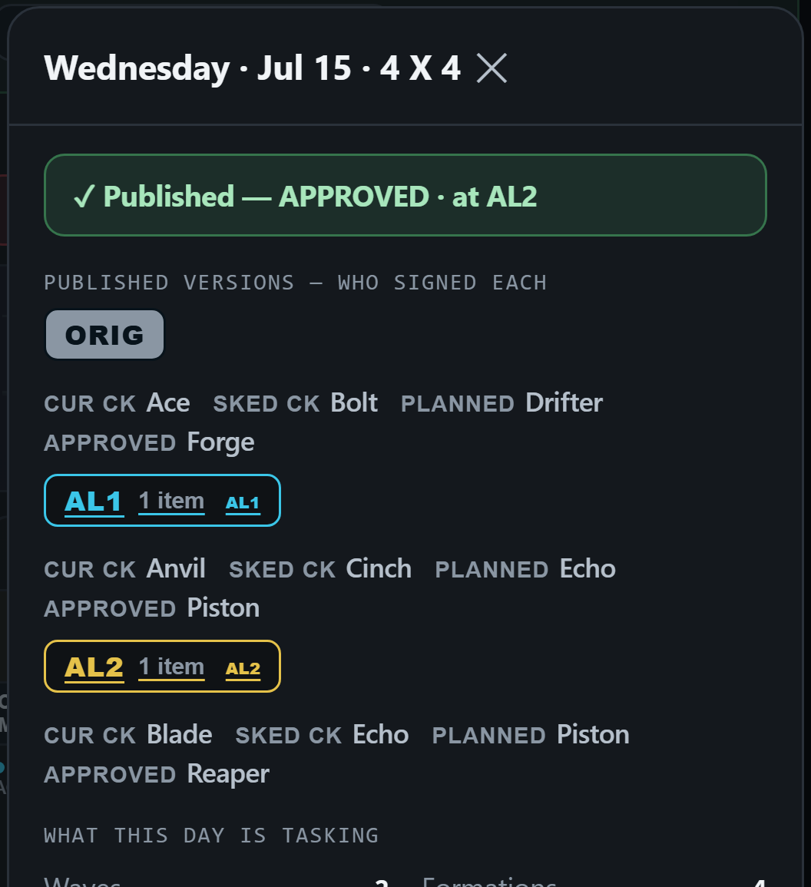
One thing the build must add: an amendment already keeps a record of its four signers, but the Original does not — its sign-offs are cleared without being kept. From the build on, every Original keeps them; only days published in today’s demo would show no names for their Original, and the demo is wiped anyway.
Both A and B, or B only? My recommendation: both — the line answers “who signed what I’m looking at” without a tap, and the panel keeps the history. B alone adds no space at all to the page.
My first answer to 6 was wrong: an Unpublish does not take your working copy back. It keeps the changes, waiting, and “Publish AL1” is the way back — even after you have signed out, no Undo needed.
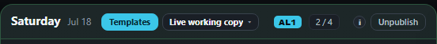

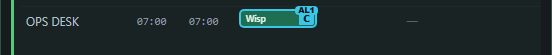
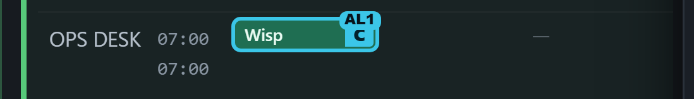
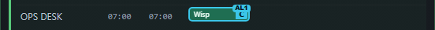
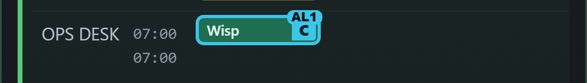
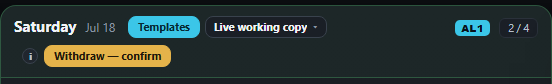
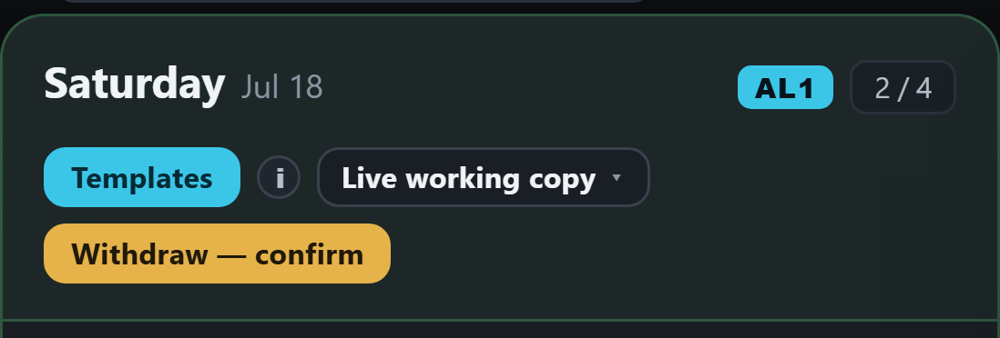
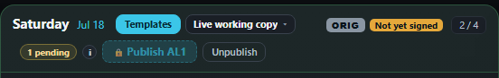
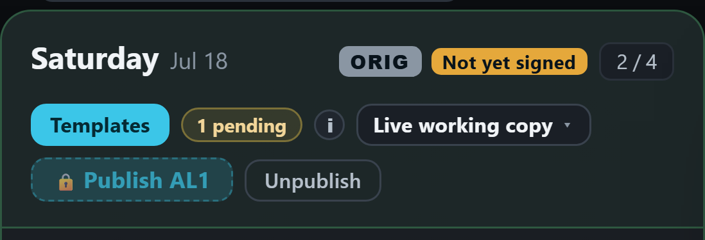
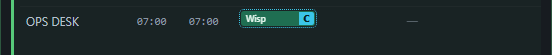
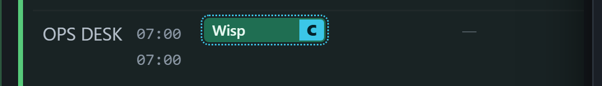
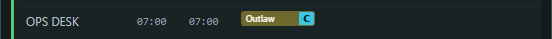
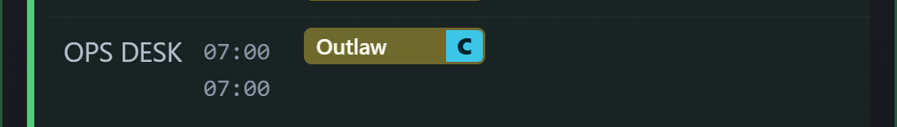

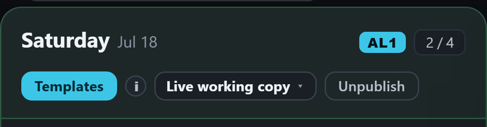


If you had changed anything else in between, it would go out in the same AL1. So no “Reissue AL1” button is needed.
Drop the “Reissue AL1” idea? My recommendation: yes, drop it — Publish AL1 already brings the day back.
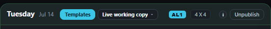
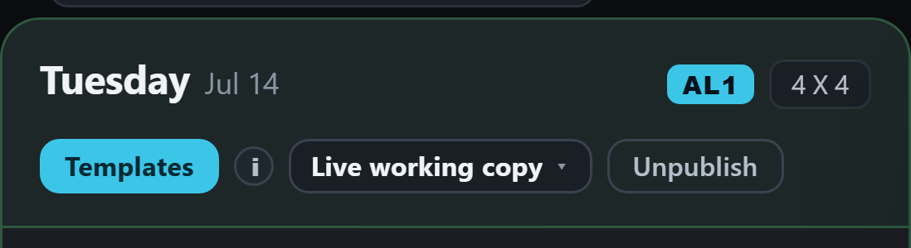
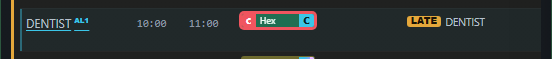
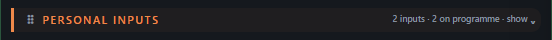
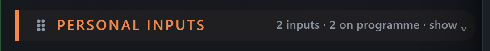
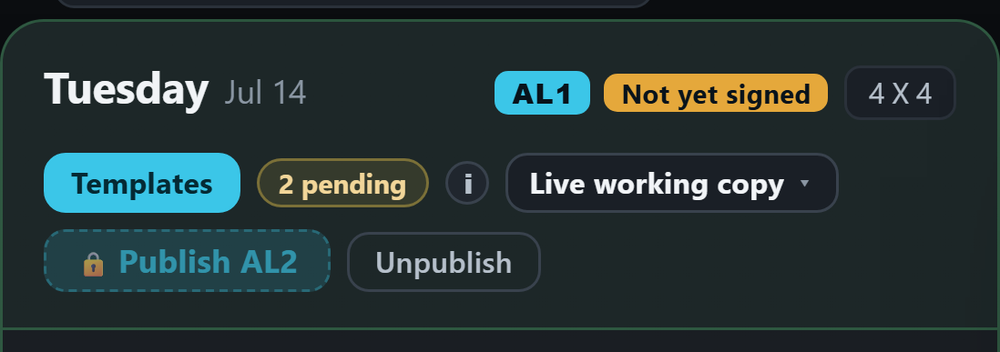
Gone from the day.
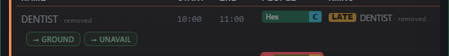
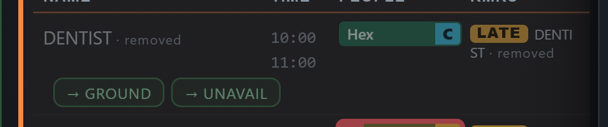
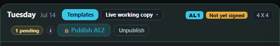
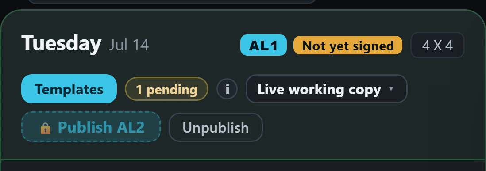
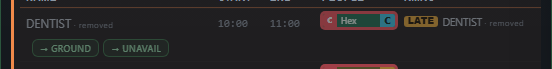
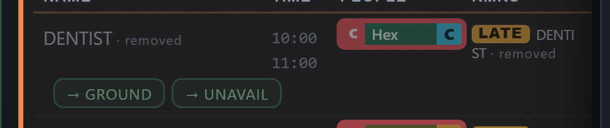
So the day never gets back to AL1: the appointment is on the programme while its own request says it was taken off, and the day keeps saying there is a change to publish. Today the way out is to delete the row and accept the request again.
The day becomes exactly what AL1 was — the three pictures in step 1: the appointment on the programme, the request on the programme, nothing waiting. The load’s confirm would count it among the edits it replaces.
Should “Load onto working copy” also put back a request you had taken off? Your answer (25 Sep): yes — back to what was published means nothing pending.